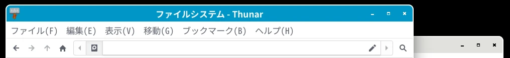

2026-07-08
yay -S lxqt lxqt-wayland-session labwcmousepad ~/.config/labwc/environment「# XKB_DEFAULT_LAYOUT=se」を
「XKB_DEFAULT_LAYOUT=jp」に変更。
設定を反映させる。
labwc --reconfiguremousepad ~/.config/labwc/environment「# XCURSOR_THEME=」を
「XCURSOR_THEME=Future-cursors」に変更。
「# XCURSOR_SIZE=」を
「XCURSOR_SIZE=24」に変更。
mousepad ~/.config/labwc/rc.xml「<context name="TitleBar">」の部分を次のように変更。
<mousebind direction="Up" action="Scroll">
<action name="Focus" />
<action name="Raise" />
</mousebind>
<mousebind direction="Down" action="Scroll">
<action name="Focus" />
<action name="Raise" />
</mousebind>「<context name="Client">」の部分に次の行を追加。
<mousebind direction="Up" action="Scroll">
<action name="Focus" />
<action name="Raise" />
</mousebind>
<mousebind direction="Down" action="Scroll">
<action name="Focus" />
<action name="Raise" />
</mousebind>gsettings set org.gnome.desktop.interface gtk-enable-primary-paste true「lxqt-config-globalkeyshortcuts」は Wayland ではサポートされていない。
mousepad ~/.config/labwc/rc.xml「Ctrl+PageUp」「Ctrl+PageDown」で音量を変更する場合は次のように設定。
<keybind key="C-Next">
<action name="Execute" command="lxqt-qdbus volume down" />
</keybind>
<keybind key="C-Prior">
<action name="Execute" command="lxqt-qdbus volume up" />
</keybind>mousepad ~/.config/labwc/rc.xmlこの部分を削除。
<!-- For qterminal dropdown -->
<keybind key="F12">
<action name="Execute" command="qterminal -d" />
</keybind>mousepad ~/.config/labwc/rc.xmlこの部分を削除。
<mousebind button="Left" action="Press">
<action name="ShowMenu" menu="root-menu" />
</mousebind>yay -S labwc-menu-generator-git
labwc-menu-generator --icons > ~/.config/labwc/menu.xml
labwc --reconfigure私は自分で作成した青系のテーマを使用しています。

ファイルはこちら。
ダウンロードしたファイルをインストール。
mkdir -p ~/.local/share/themes/Labwc-Blue/labwc
mv themerc ~/.local/share/themes/Labwc-Blue/labwc/rc.xml を編集。
mousepad ~/.config/labwc/rc.xml<theme> を次のように変更。
<theme>
<name>Labwc-Blue</name>GUI で設定する場合は「labwc-tweaks」を使用する。
mkdir -p ~/.local/share/themes/theme_name/labwc
cp /usr/share/doc/labwc/themerc ~/.local/share/themes/theme_name/labwc/ローカルの themerc を編集して適用。
LXQt では「Noto Sans Mono CJK JP」が等幅フォントとして認識されない。
mkdir -p ~/.config/fontconfig/conf.d
mousepad ~/.config/fontconfig/conf.d/70-noto-mono.conf次の内容を貼り付けて保存。
<?xml version="1.0"?>
<!DOCTYPE fontconfig SYSTEM "fonts.dtd">
<fontconfig>
<match target="scan">
<test name="family">
<string>Noto Sans Mono CJK JP</string>
</test>
<edit name="spacing" mode="assign">
<int>100</int>
</edit>
</match>
</fontconfig>フォント情報のキャッシュを更新。
fc-cache -f -v次のコマンドでフォントファイルが表示されるのを確認。
fc-list :spacing=100 | grep -i "Noto Sans Mono CJK JP:style=Regular"「世界時計の設定」→「表示形式」タブ→
「形式を詳しく指定する」にチェックを入れる→
「指定」をクリック→
MM月dd日 (ddd) HH:mm
「パネルの設定」→「配置」→
幅: 38 ピクセル
アイコン: 32 ピクセル
場所: 画面上部
「LXQt セッションの設定」→「基本設定」→
「セッション終了時に確認する」のチェックを外す。
「サスペンド/ハイバネートの前に画面をロックする」のチェックを外す。
「音量調節の設定」→
「音量変更のステップ幅」を 2 にする。
「ファンシーメニューの設定」→
「カテゴリの位置」を「左」にする。
get_cpu_usage_and_temp.py
をダウンロード。
「ウィジェットの管理」で「カスタムコマンド」を追加。
「カスタムコマンドの設定」をクリックして次のコマンドを書く。
python ~/get_cpu_usage_and_temp.py例: lightdm から emptty に変更
yay -S --needed emptty
sudo systemctl disable lightdm.service
sudo systemctl enable emptty.serviceemptty の設定を変更。
cp /etc/emptty/conf .
mousepad conf次の箇所を変更。
DEFAULT_USER=ログイン名
AUTOLOGIN_SESSION="LXQt (Wayland)"
LANG=ja_JP.UTF-8ファイルを上書き。
sudo mv conf /etc/emptty/conf